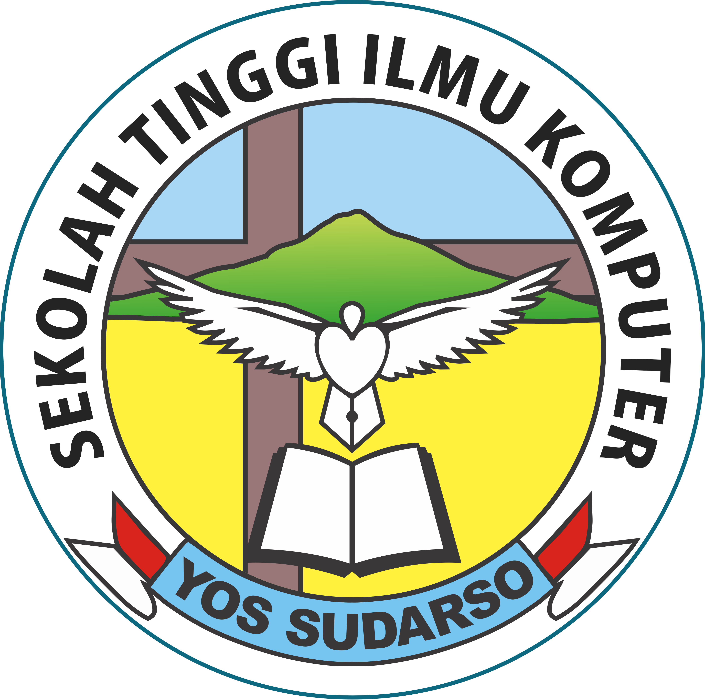

|  | Pemilihan Ketua Tehnik Informatika
Tahun Angkatan 2016 |
Selamat datang di halaman web Pemilihan Ketua Tehnik Informatika Tahun Angkatan 2016, di halaman ini anda akan mengisi form-form
yang telah disediakan oleh saya untuk memilih calon ketua tehnik informatika angkatan 2016 yang baru.
Berikut daftar calon ketua baru :
Dimohon untuk mengisi form ini dengan jujur dan benar apa adanya
Masukan data diri anda
Terima kasih telah mengunjungi web yang dibuat oleh :
Nama : Alfeus Frixsen Eliel
NIM : 201603009
Jurusan : Tehnik Informatika